Unit 8 Visualization
8.1 Scatterplots - Visualizing the world
8.1.1 Basic scatterplots using ggplot
## 'data.frame': 194 obs. of 13 variables:
## $ Country : Factor w/ 194 levels "Afghanistan",..: 1 2 3 4 5 6 7 8 9 10 ...
## $ Region : Factor w/ 6 levels "Africa","Americas",..: 3 4 1 4 1 2 2 4 6 4 ...
## $ Population : int 29825 3162 38482 78 20821 89 41087 2969 23050 8464 ...
## $ Under15 : num 47.4 21.3 27.4 15.2 47.6 ...
## $ Over60 : num 3.82 14.93 7.17 22.86 3.84 ...
## $ FertilityRate : num 5.4 1.75 2.83 NA 6.1 2.12 2.2 1.74 1.89 1.44 ...
## $ LifeExpectancy : int 60 74 73 82 51 75 76 71 82 81 ...
## $ ChildMortality : num 98.5 16.7 20 3.2 163.5 ...
## $ CellularSubscribers : num 54.3 96.4 99 75.5 48.4 ...
...library(ggplot2)
# Create the ggplot object with the data and the aesthetic mapping:
scatterplot <- ggplot(WHO, aes(x = GNI, y = FertilityRate))
# Add the geom_point geometry
scatterplot + geom_point()## Warning: Removed 35 rows containing missing values (geom_point).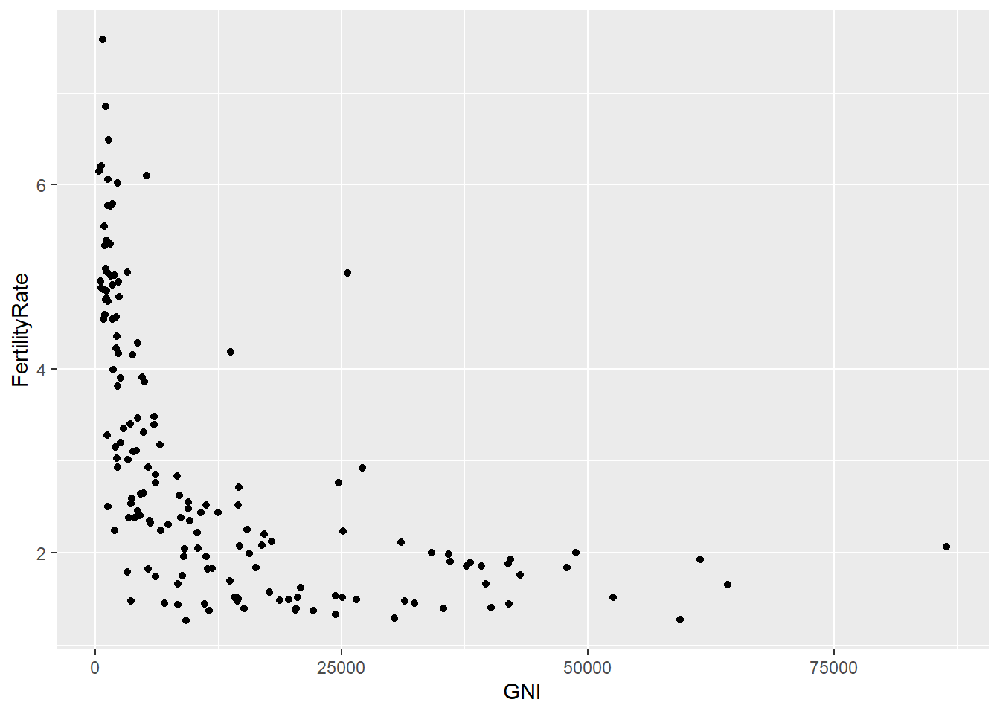
# Redo the plot with blue triangles instead of circles:
scatterplot + geom_point(color = "blue", size = 3, shape = 17) ## Warning: Removed 35 rows containing missing values (geom_point).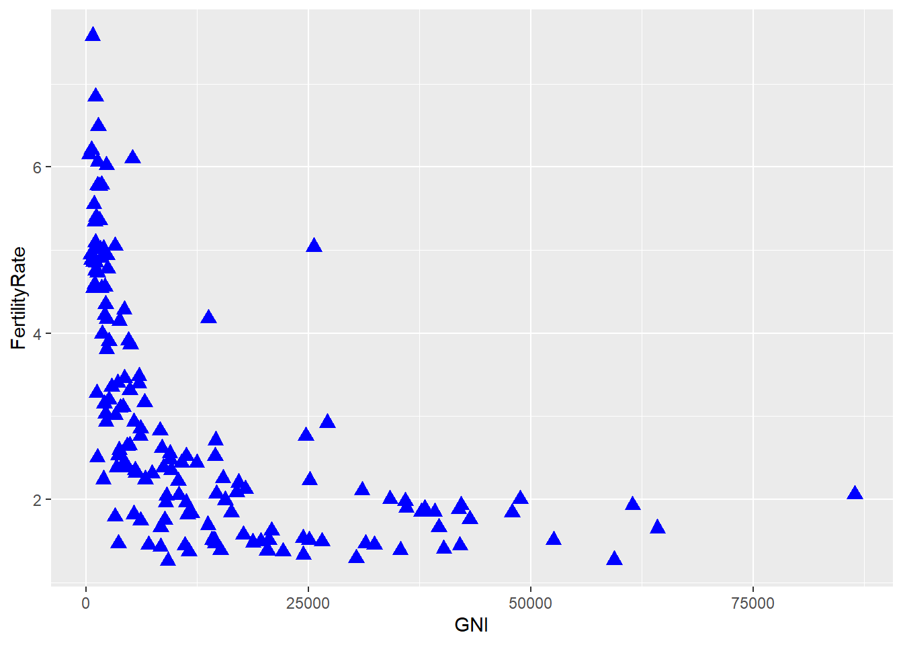
## Warning: Removed 35 rows containing missing values (geom_point).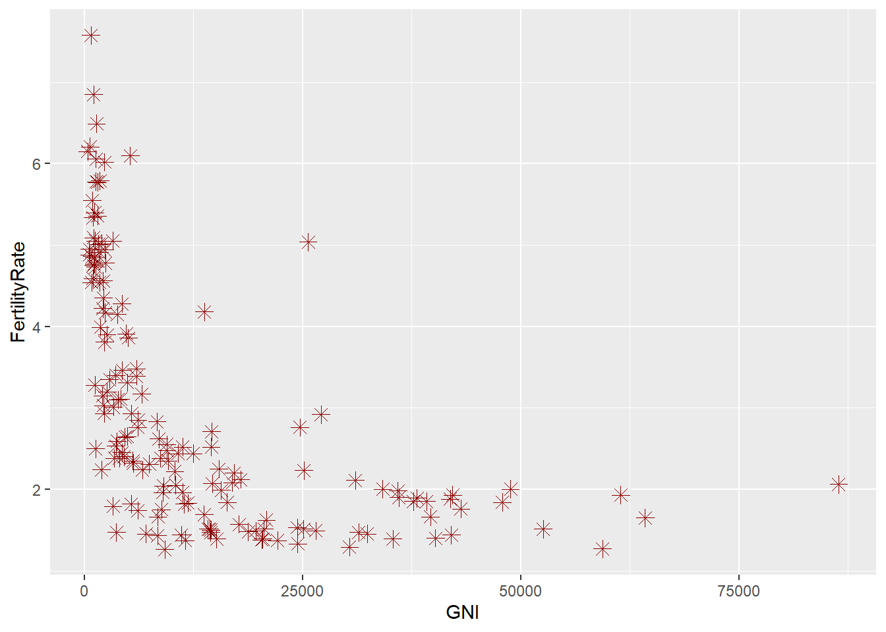
# Add a title to the plot:
scatterplot + geom_point(colour = "blue", size = 3, shape = 17) + ggtitle("Fertility Rate vs. Gross National Income")## Warning: Removed 35 rows containing missing values (geom_point).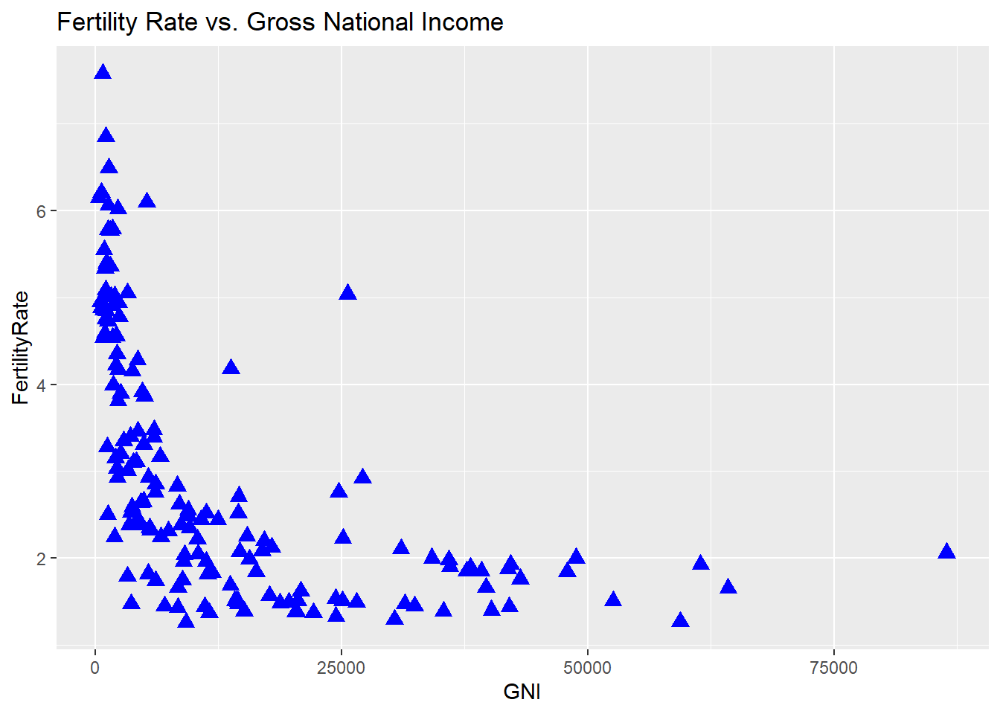
# Color the points by region:
ggplot(WHO, aes(x = GNI, y = FertilityRate, color = Region)) + geom_point()## Warning: Removed 35 rows containing missing values (geom_point).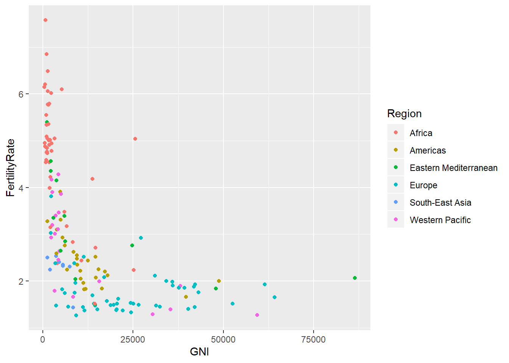
# Color the points according to life expectancy:
ggplot(WHO, aes(x = GNI, y = FertilityRate, color = LifeExpectancy)) + geom_point()## Warning: Removed 35 rows containing missing values (geom_point).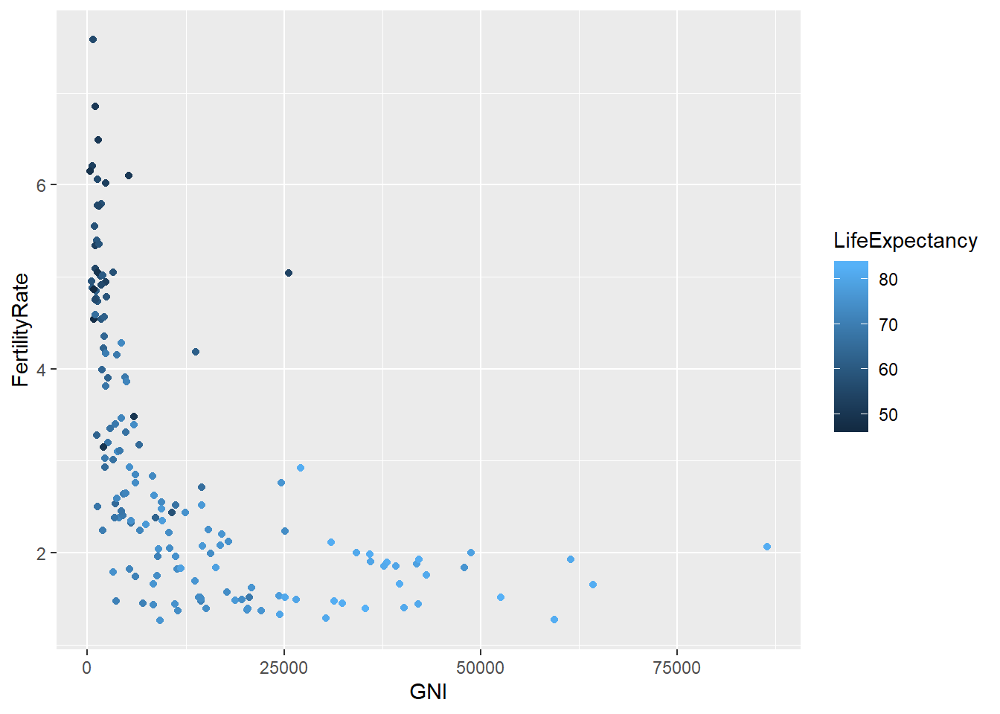
# Is the fertility rate of a country was a good predictor of the percentage of the population under 15?
ggplot(WHO, aes(x = FertilityRate, y = Under15)) + geom_point()## Warning: Removed 11 rows containing missing values (geom_point).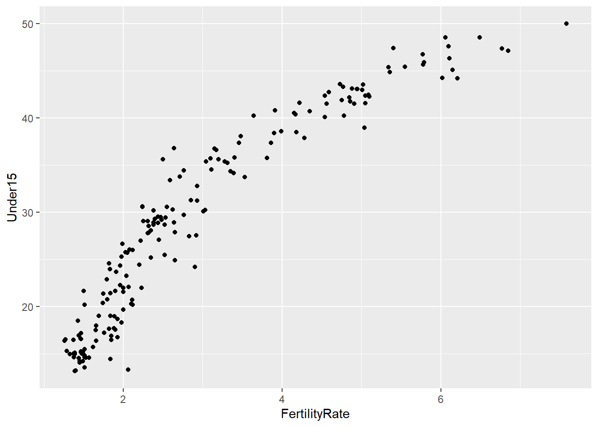
# Let's try a log transformation:
ggplot(WHO, aes(x = log(FertilityRate), y = Under15)) + geom_point()## Warning: Removed 11 rows containing missing values (geom_point).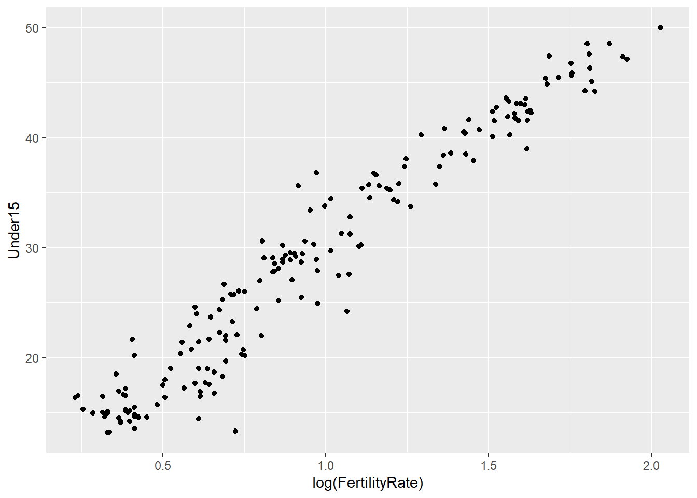
# Simple linear regression model to predict the percentage of the population under 15, using the log of the fertility rate:
mod = lm(Under15 ~ log(FertilityRate), data = WHO)
summary(mod)##
## Call:
## lm(formula = Under15 ~ log(FertilityRate), data = WHO)
##
## Residuals:
## Min 1Q Median 3Q Max
## -10.3131 -1.7742 0.0446 1.7440 7.7174
##
## Coefficients:
## Estimate Std. Error t value Pr(>|t|)
...# Add this regression line to our plot:
ggplot(WHO, aes(x = log(FertilityRate), y = Under15)) + geom_point() + stat_smooth(method = "lm")## Warning: Removed 11 rows containing non-finite values (stat_smooth).## Warning: Removed 11 rows containing missing values (geom_point).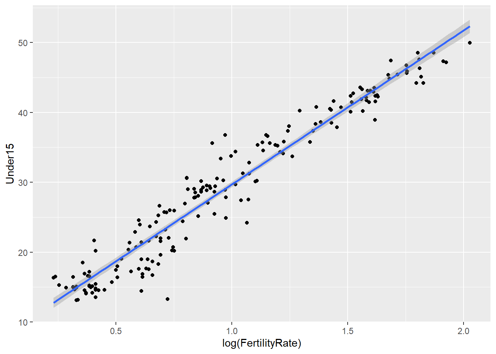
# 99% confidence interval
ggplot(WHO, aes(x = log(FertilityRate), y = Under15)) + geom_point() + stat_smooth(method = "lm", level = 0.99)## Warning: Removed 11 rows containing non-finite values (stat_smooth).
## Warning: Removed 11 rows containing missing values (geom_point).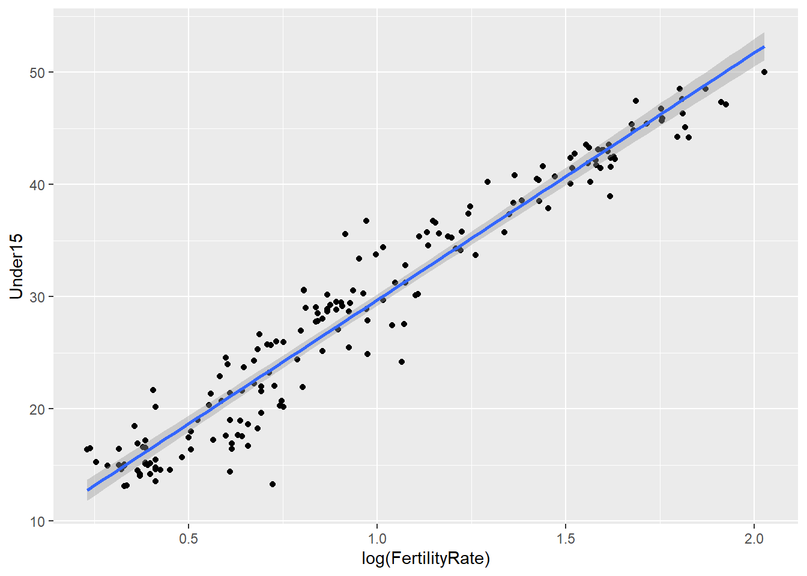
# No confidence interval in the plot
ggplot(WHO, aes(x = log(FertilityRate), y = Under15)) + geom_point() + stat_smooth(method = "lm", se = FALSE)## Warning: Removed 11 rows containing non-finite values (stat_smooth).
## Warning: Removed 11 rows containing missing values (geom_point).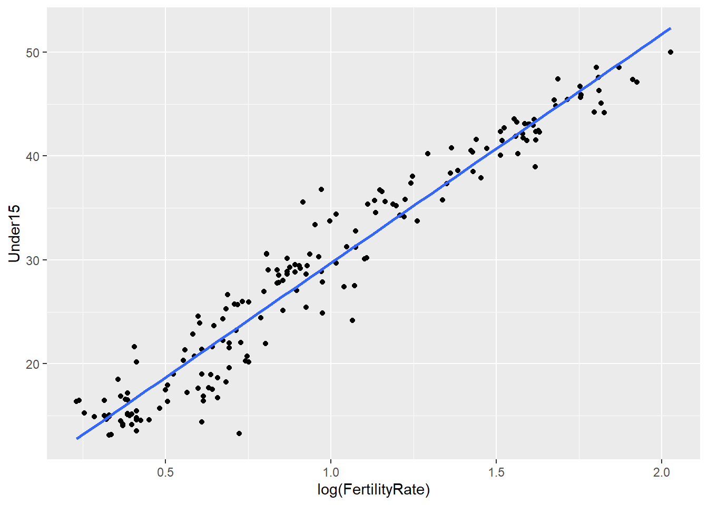
# Change the color of the regression line:
ggplot(WHO, aes(x = log(FertilityRate), y = Under15)) + geom_point() + stat_smooth(method = "lm", colour = "orange")## Warning: Removed 11 rows containing non-finite values (stat_smooth).
## Warning: Removed 11 rows containing missing values (geom_point).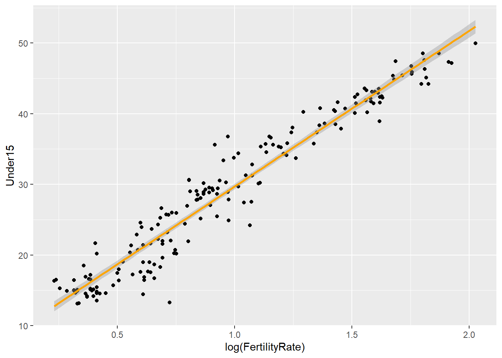
8.2 Visualizing crime over time
mvt <- read.csv("week7/mvt.csv")
# Convert the Date variable to a format that R will recognize:
mvt$Date <- strptime(mvt$Date, format="%m/%d/%y %H:%M")
# Extract the hour and the day of the week:
mvt$Weekday <- weekdays(mvt$Date)
mvt$Hour <- mvt$Date$hour
# Create a simple line plot - need the total number of crimes on each day of the week. We can get this information by creating a table:
table(mvt$Weekday)##
## Friday Monday Saturday Sunday Thursday Tuesday Wednesday
## 29284 27397 27118 26316 27319 26791 27416# Save this table as a data frame:
WeekdayCounts <- as.data.frame(table(mvt$Weekday))
str(WeekdayCounts) ## 'data.frame': 7 obs. of 2 variables:
## $ Var1: Factor w/ 7 levels "Friday","Monday",..: 1 2 3 4 5 6 7
## $ Freq: int 29284 27397 27118 26316 27319 26791 27416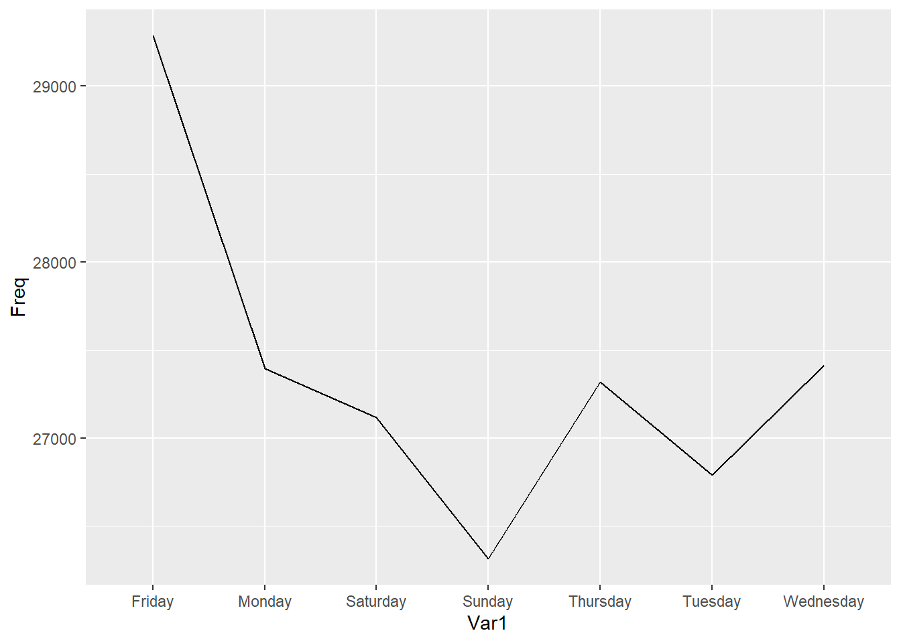
# Make the "Var1" variable an ORDERED factor variable
WeekdayCounts$Var1 <- factor(WeekdayCounts$Var1, ordered=TRUE, levels=c("Sunday", "Monday", "Tuesday", "Wednesday", "Thursday", "Friday","Saturday"))
# Try again:
ggplot(WeekdayCounts, aes(x=Var1, y=Freq)) + geom_line(aes(group=1))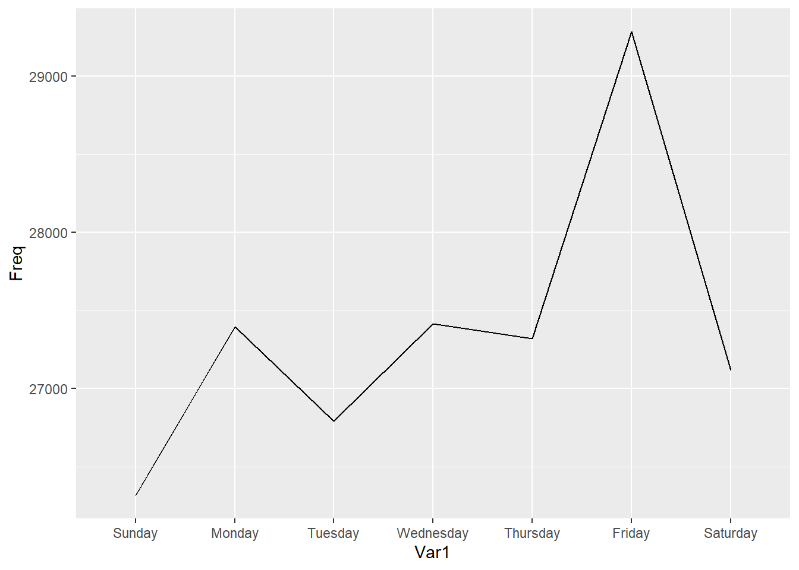
# Change our x and y labels:
ggplot(WeekdayCounts, aes(x=Var1, y=Freq)) + geom_line(aes(group=1)) + xlab("Day of the Week") + ylab("Total Motor Vehicle Thefts")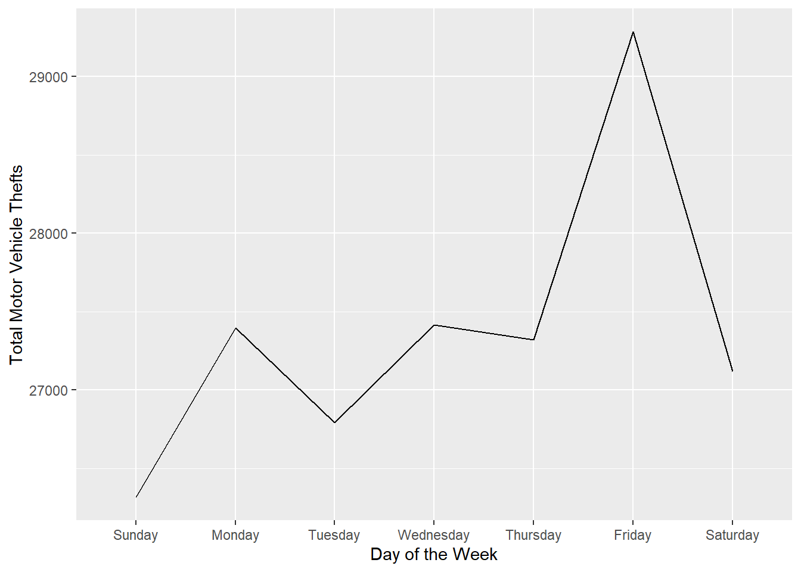
8.2.1 Heatmaps
##
## 0 1 2 3 4 5 6 7 8 9 10 11 12
## Friday 1873 932 743 560 473 602 839 1203 1268 1286 938 822 1207
## Monday 1900 825 712 527 415 542 772 1123 1323 1235 971 737 1129
## Saturday 2050 1267 985 836 652 508 541 650 858 1039 946 789 1204
## Sunday 2028 1236 1019 838 607 461 478 483 615 864 884 787 1192
## Thursday 1856 816 696 508 400 534 799 1135 1298 1301 932 731 1093
## Tuesday 1691 777 603 464 414 520 845 1118 1175 1174 948 786 1108
## Wednesday 1814 790 619 469 396 561 862 1140 1329 1237 947 763 1225
##
...# Save this to a data frame:
DayHourCounts <- as.data.frame(table(mvt$Weekday, mvt$Hour))
str(DayHourCounts)## 'data.frame': 168 obs. of 3 variables:
## $ Var1: Factor w/ 7 levels "Friday","Monday",..: 1 2 3 4 5 6 7 1 2 3 ...
## $ Var2: Factor w/ 24 levels "0","1","2","3",..: 1 1 1 1 1 1 1 2 2 2 ...
## $ Freq: int 1873 1900 2050 2028 1856 1691 1814 932 825 1267 ...# Convert the second variable, Var2, to numbers and call it Hour:
DayHourCounts$Hour <- as.numeric(as.character(DayHourCounts$Var2))
# Create out plot:
ggplot(DayHourCounts, aes(x=Hour, y=Freq)) + geom_line(aes(group=Var1))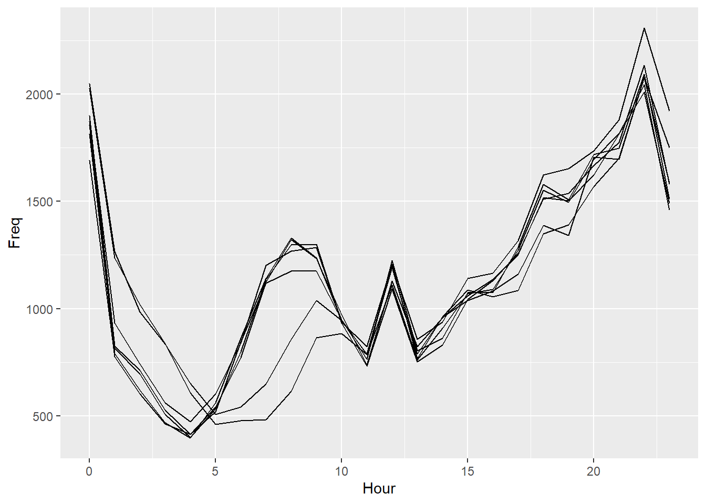
# Change the colors
ggplot(DayHourCounts, aes(x=Hour, y=Freq)) + geom_line(aes(group=Var1, color=Var1), size=2)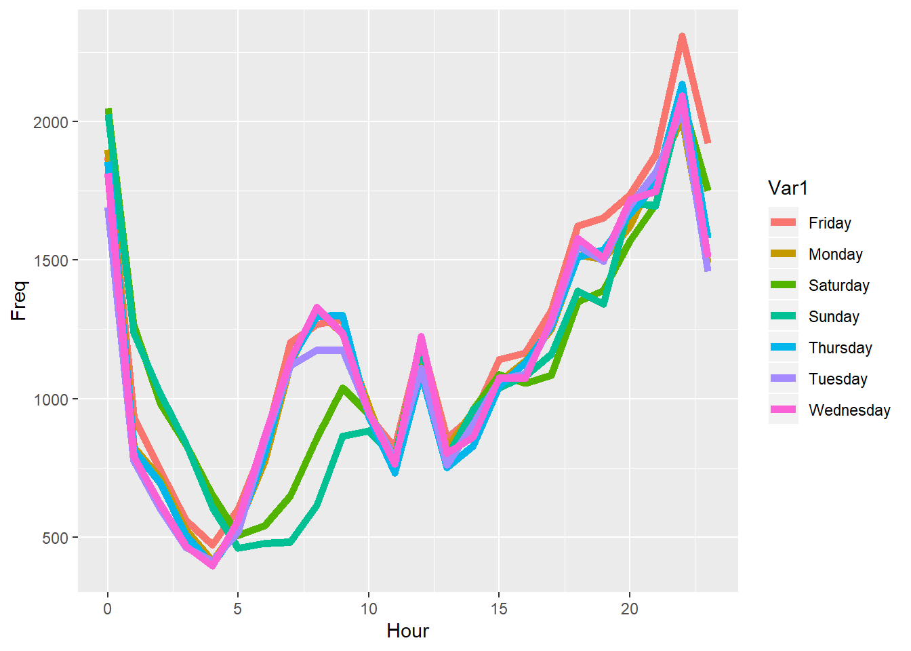
# Separate the weekends from the weekdays:
DayHourCounts$Type = ifelse((DayHourCounts$Var1 == "Sunday") | (DayHourCounts$Var1 == "Saturday"), "Weekend", "Weekday")
# Redo our plot, this time coloring by Type:
ggplot(DayHourCounts, aes(x=Hour, y=Freq)) + geom_line(aes(group=Var1, color=Type), size=2) 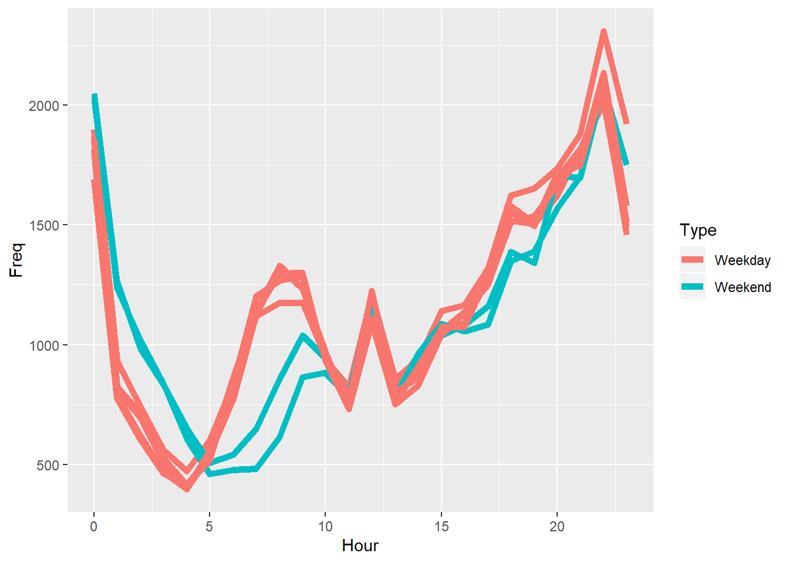
# Make the lines a little transparent:
ggplot(DayHourCounts, aes(x=Hour, y=Freq)) + geom_line(aes(group=Var1, color=Type), size=2, alpha=0.5) 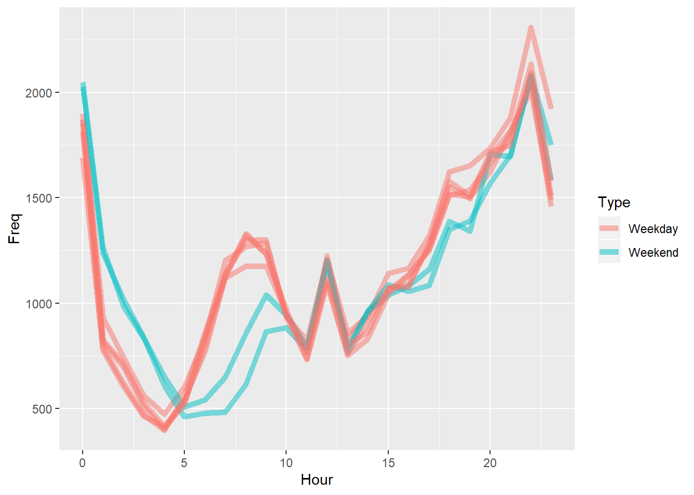
# Fix the order of the days:
DayHourCounts$Var1 = factor(DayHourCounts$Var1, ordered=TRUE, levels=c("Monday", "Tuesday", "Wednesday", "Thursday", "Friday", "Saturday", "Sunday"))
# Make a heatmap:
ggplot(DayHourCounts, aes(x = Hour, y = Var1)) + geom_tile(aes(fill = Freq))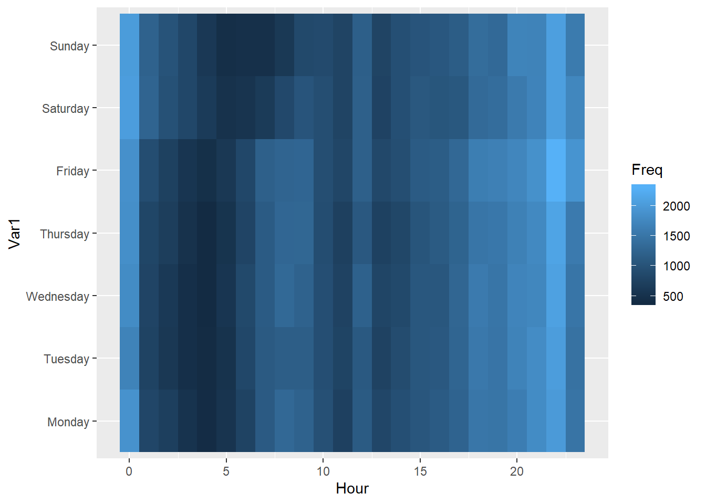
# Change the label on the legend, and get rid of the y-label:
ggplot(DayHourCounts, aes(x = Hour, y = Var1)) + geom_tile(aes(fill = Freq)) + scale_fill_gradient(name="Total MV Thefts") + theme(axis.title.y = element_blank())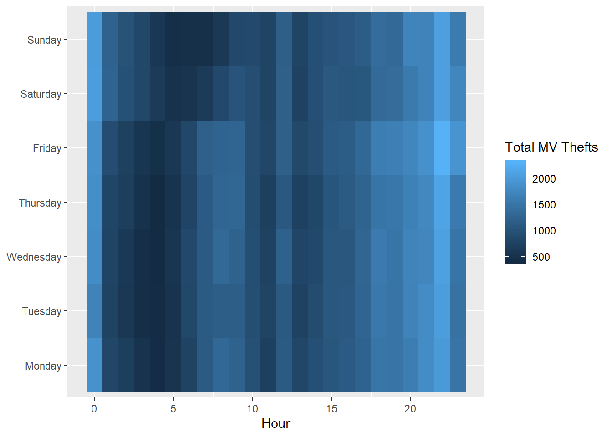
# Change the color scheme
ggplot(DayHourCounts, aes(x = Hour, y = Var1)) + geom_tile(aes(fill = Freq)) + scale_fill_gradient(name="Total MV Thefts", low="white", high="red") + theme(axis.title.y = element_blank())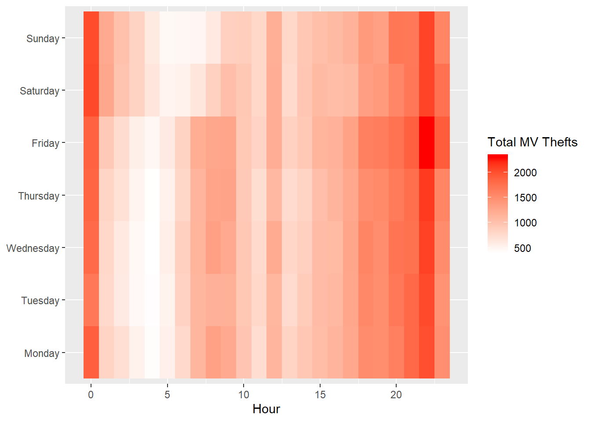
8.2.2 A Geographical Hot Spot Map
library(maps)
library(ggmap)
library(tmaptools)
# Load a map of Chicago into R:
chicago <- get_stamenmap(rbind(as.numeric(paste(geocode_OSM("Chicago")$bbox))), zoom = 11)## Source : http://tile.stamen.com/terrain/11/523/760.png## Source : http://tile.stamen.com/terrain/11/524/760.png## Source : http://tile.stamen.com/terrain/11/525/760.png## Source : http://tile.stamen.com/terrain/11/526/760.png## Source : http://tile.stamen.com/terrain/11/523/761.png## Source : http://tile.stamen.com/terrain/11/524/761.png## Source : http://tile.stamen.com/terrain/11/525/761.png## Source : http://tile.stamen.com/terrain/11/526/761.png## Source : http://tile.stamen.com/terrain/11/523/762.png## Source : http://tile.stamen.com/terrain/11/524/762.png## Source : http://tile.stamen.com/terrain/11/525/762.png## Source : http://tile.stamen.com/terrain/11/526/762.png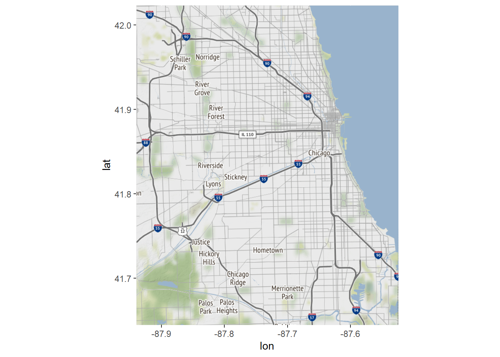
# Plot the first 100 motor vehicle thefts:
ggmap(chicago) + geom_point(data = mvt[1:100,], aes(x = Longitude, y = Latitude))## Warning: Removed 4 rows containing missing values (geom_point).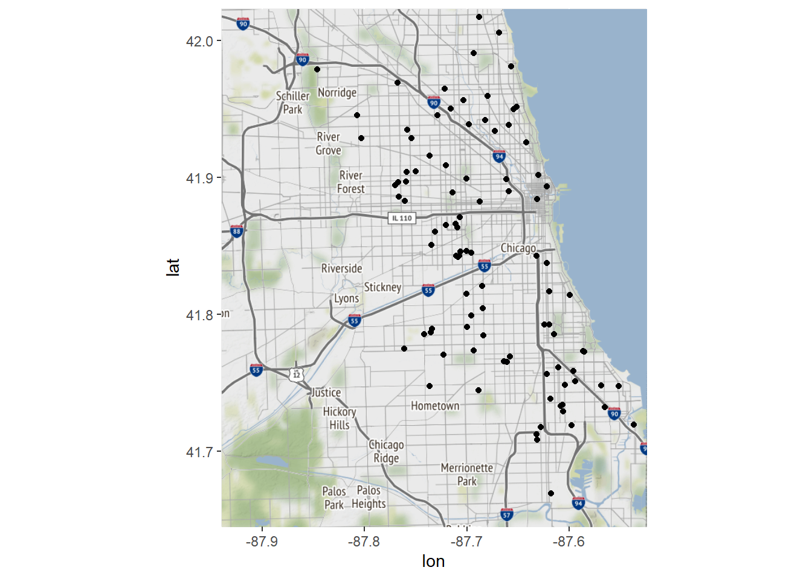
# Round our latitude and longitude to 2 digits of accuracy, and create a crime counts data frame for each area:
LatLonCounts <- as.data.frame(table(round(mvt$Longitude,2), round(mvt$Latitude,2)))
str(LatLonCounts)## 'data.frame': 1638 obs. of 3 variables:
## $ Var1: Factor w/ 42 levels "-87.93","-87.92",..: 1 2 3 4 5 6 7 8 9 10 ...
## $ Var2: Factor w/ 39 levels "41.64","41.65",..: 1 1 1 1 1 1 1 1 1 1 ...
## $ Freq: int 0 0 0 0 0 0 0 0 0 0 ...# Convert our Longitude and Latitude variable to numbers:
LatLonCounts$Long <- as.numeric(as.character(LatLonCounts$Var1))
LatLonCounts$Lat <- as.numeric(as.character(LatLonCounts$Var2))
# Plot these points on our map:
ggmap(chicago) + geom_point(data = LatLonCounts, aes(x = Long, y = Lat, color = Freq, size=Freq))## Warning: Removed 80 rows containing missing values (geom_point).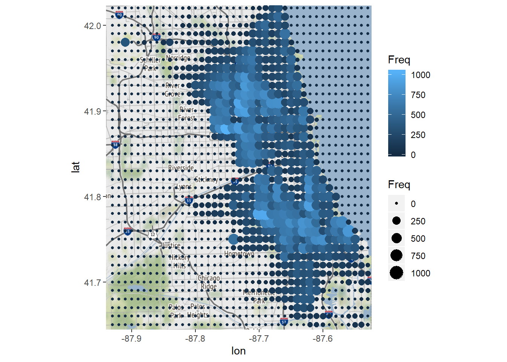
# Change the color scheme:
ggmap(chicago) + geom_point(data = LatLonCounts, aes(x = Long, y = Lat, color = Freq, size=Freq)) + scale_colour_gradient(low="yellow", high="red")## Warning: Removed 80 rows containing missing values (geom_point).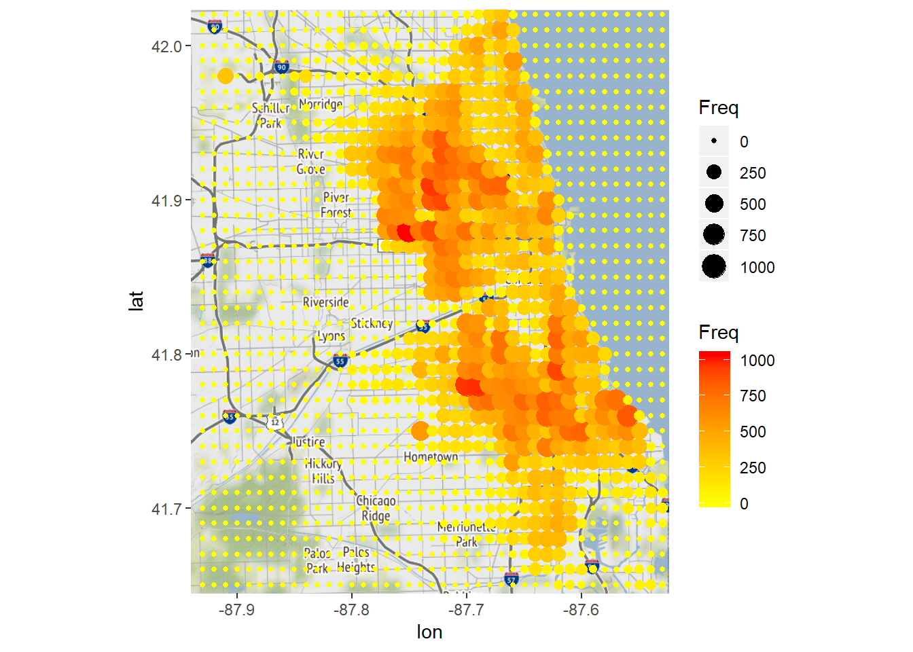
# We can also use the geom_tile geometry
ggmap(chicago) + geom_tile(data = LatLonCounts, aes(x = Long, y = Lat, alpha = Freq), fill="red")## Warning: Removed 80 rows containing missing values (geom_tile).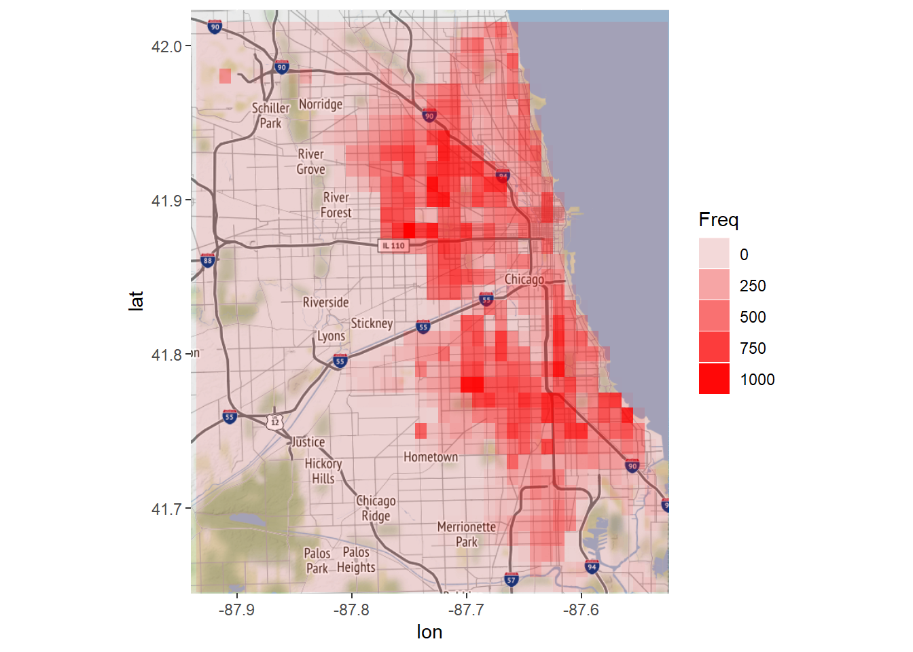
8.2.3 A Heatmap of the United States
## 'data.frame': 51 obs. of 6 variables:
## $ State : Factor w/ 51 levels "Alabama","Alaska",..: 1 2 3 4 5 6 7 8 9 10 ...
## $ Population : int 4779736 710231 6392017 2915918 37253956 5029196 3574097 897934 601723 19687653 ...
## $ PopulationDensity: num 94.65 1.26 57.05 56.43 244.2 ...
## $ Murders : int 199 31 352 130 1811 117 131 48 131 987 ...
## $ GunMurders : int 135 19 232 93 1257 65 97 38 99 669 ...
## $ GunOwnership : num 0.517 0.578 0.311 0.553 0.213 0.347 0.167 0.255 0.036 0.245 ...## 'data.frame': 15537 obs. of 6 variables:
## $ long : num -87.5 -87.5 -87.5 -87.5 -87.6 ...
## $ lat : num 30.4 30.4 30.4 30.3 30.3 ...
## $ group : num 1 1 1 1 1 1 1 1 1 1 ...
## $ order : int 1 2 3 4 5 6 7 8 9 10 ...
## $ region : chr "alabama" "alabama" "alabama" "alabama" ...
## $ subregion: chr NA NA NA NA ...# Plot the map:
ggplot(statesMap, aes(x = long, y = lat, group = group)) + geom_polygon(fill = "white", color = "black") 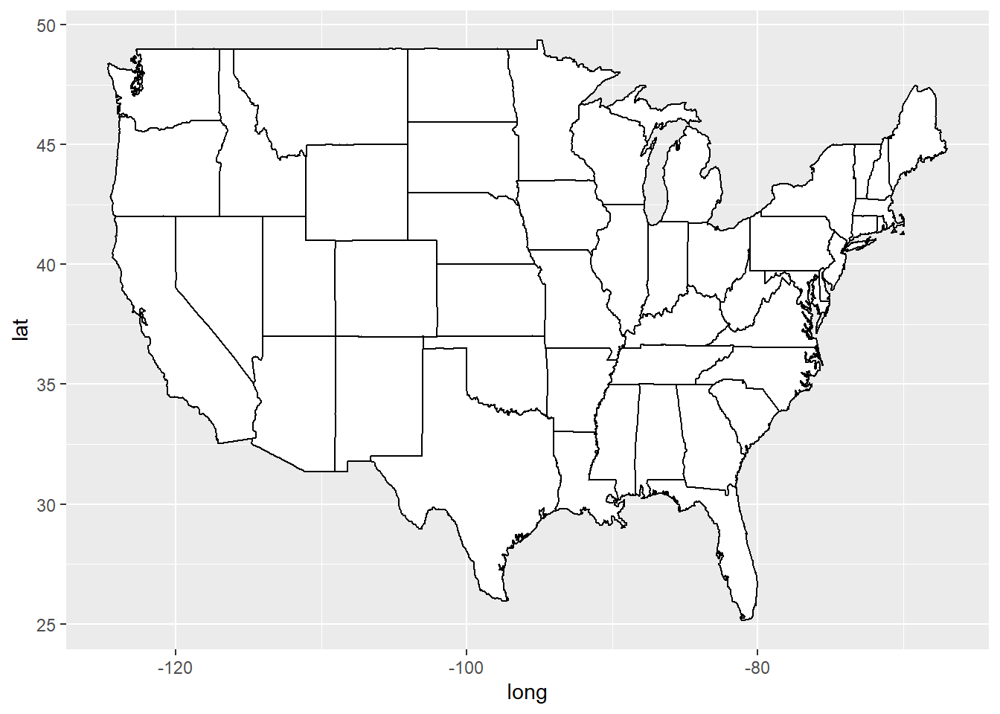
# Create a new variable called region with the lowercase names to match the statesMap:
murders$region <- tolower(murders$State)
# Join the statesMap data and the murders data into one dataframe:
murderMap <- merge(statesMap, murders, by="region")
str(murderMap)## 'data.frame': 15537 obs. of 12 variables:
## $ region : chr "alabama" "alabama" "alabama" "alabama" ...
## $ long : num -87.5 -87.5 -87.5 -87.5 -87.6 ...
## $ lat : num 30.4 30.4 30.4 30.3 30.3 ...
## $ group : num 1 1 1 1 1 1 1 1 1 1 ...
## $ order : int 1 2 3 4 5 6 7 8 9 10 ...
## $ subregion : chr NA NA NA NA ...
## $ State : Factor w/ 51 levels "Alabama","Alaska",..: 1 1 1 1 1 1 1 1 1 1 ...
## $ Population : int 4779736 4779736 4779736 4779736 4779736 4779736 4779736 4779736 4779736 4779736 ...
## $ PopulationDensity: num 94.7 94.7 94.7 94.7 94.7 ...
...# Plot the number of murder on our map of the United States:
ggplot(murderMap, aes(x = long, y = lat, group = group, fill = Murders)) + geom_polygon(color = "black") + scale_fill_gradient(low = "black", high = "red", guide = "legend")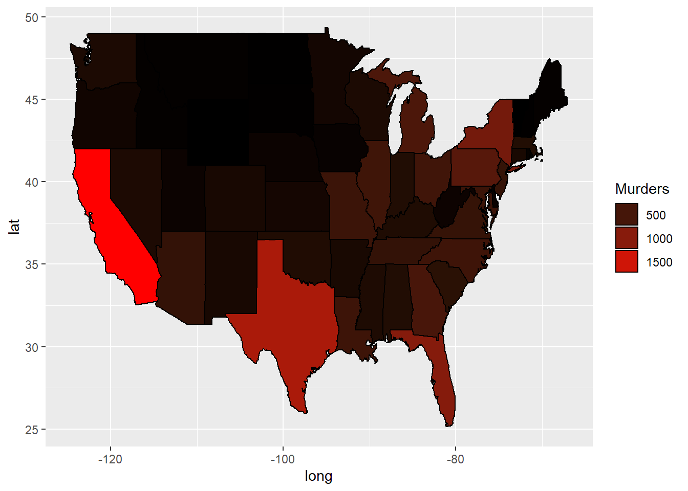
# Plot a map of the population:
ggplot(murderMap, aes(x = long, y = lat, group = group, fill = Population)) + geom_polygon(color = "black") + scale_fill_gradient(low = "black", high = "red", guide = "legend")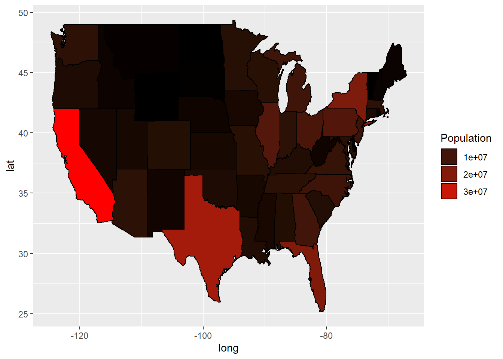
# Create a new variable that is the number of murders per 100,000 population:
murderMap$MurderRate <- murderMap$Murders / murderMap$Population * 100000
# Redo our plot with murder rate:
ggplot(murderMap, aes(x = long, y = lat, group = group, fill = MurderRate)) + geom_polygon(color = "black") + scale_fill_gradient(low = "black", high = "red", guide = "legend")
# Redo the plot, removing any states with murder rates above 10:
ggplot(murderMap, aes(x = long, y = lat, group = group, fill = MurderRate)) + geom_polygon(color = "black") + scale_fill_gradient(low = "black", high = "red", guide = "legend", limits = c(0,10))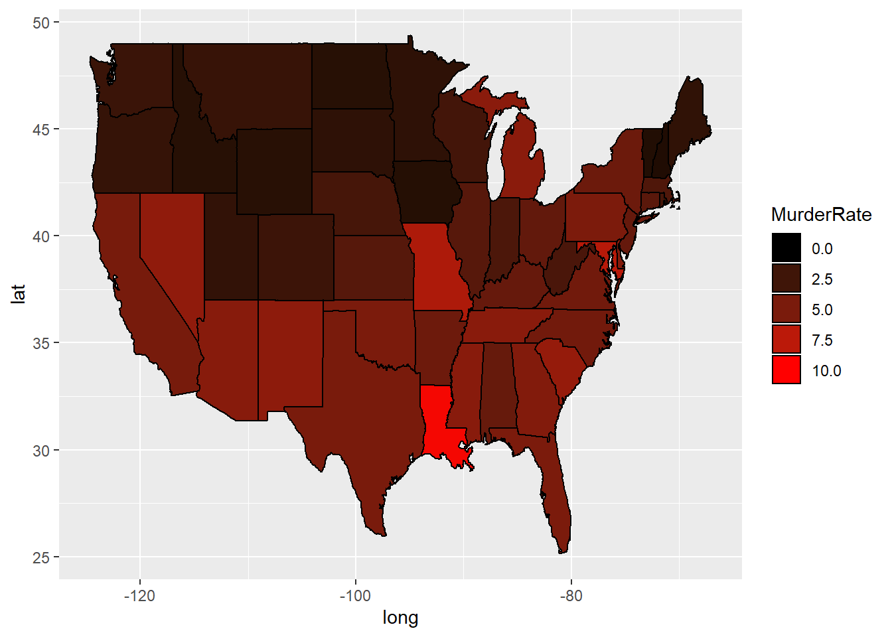
8.3 Recitation
8.3.1 Bar Charts
## 'data.frame': 8 obs. of 2 variables:
## $ Region : Factor w/ 8 levels "Africa","Asia",..: 2 3 6 4 5 1 7 8
## $ PercentOfIntl: num 0.531 0.201 0.098 0.09 0.054 0.02 0.015 0.002# We want to make a bar plot with region on the X axis
# and Percentage on the y-axis.
ggplot(intl, aes(x=Region, y=PercentOfIntl)) +
geom_bar(stat="identity") + #
geom_text(aes(label=PercentOfIntl))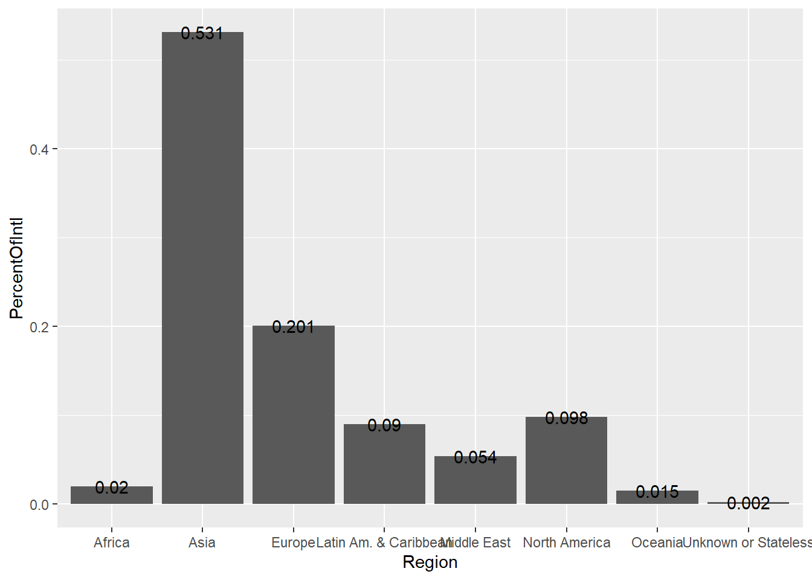
#Make region ordered by decreasing percentage
intl <- transform(intl, Region = reorder(Region, -PercentOfIntl))
intl$PercentOfIntl = intl$PercentOfIntl * 100 #normalize
# Make the plot
ggplot(intl, aes(x=Region, y=PercentOfIntl)) +
geom_bar(stat="identity", fill="dark blue") +
geom_text(aes(label=PercentOfIntl), vjust=-0.4) +
ylab("Percent of International Students") +
theme(axis.title.x = element_blank(), axis.text.x = element_text(angle = 45, hjust = 1))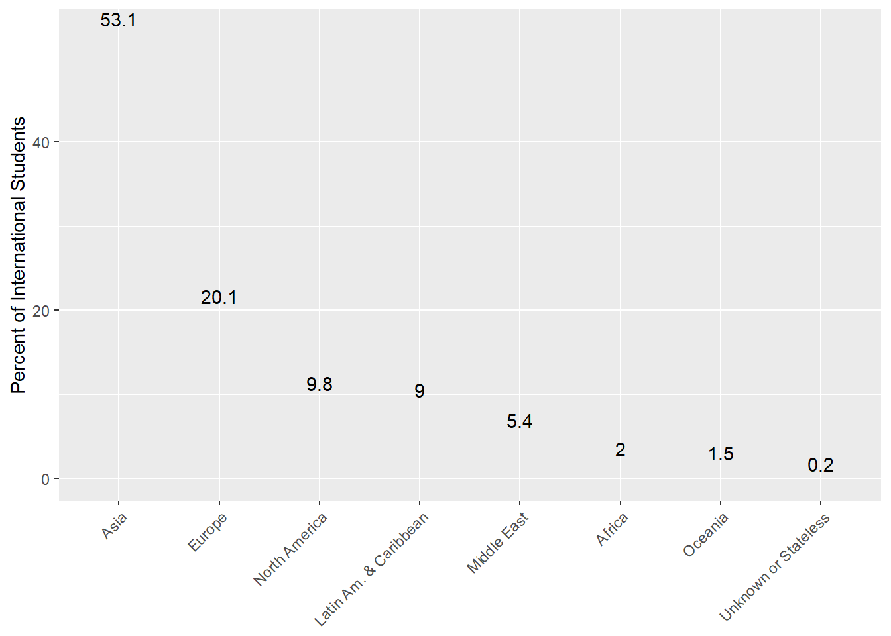
#World Map
intlall <- read.csv("week7/intlall.csv",stringsAsFactors=FALSE)
intlall[is.na(intlall)] = 0#replace NAs with 0
world_map <- map_data("world")
str(world_map)## 'data.frame': 99338 obs. of 6 variables:
## $ long : num -69.9 -69.9 -69.9 -70 -70.1 ...
## $ lat : num 12.5 12.4 12.4 12.5 12.5 ...
## $ group : num 1 1 1 1 1 1 1 1 1 1 ...
## $ order : int 1 2 3 4 5 6 7 8 9 10 ...
## $ region : chr "Aruba" "Aruba" "Aruba" "Aruba" ...
## $ subregion: chr NA NA NA NA ...#Merge data by region on worldmap and citizenship on intlall
world_map <- merge(world_map, intlall, by.x ="region", by.y = "Citizenship")
str(world_map)## 'data.frame': 63634 obs. of 12 variables:
## $ region : chr "Albania" "Albania" "Albania" "Albania" ...
## $ long : num 20.5 20.4 19.5 20.5 20.4 ...
## $ lat : num 41.3 39.8 42.5 40.1 41.5 ...
## $ group : num 6 6 6 6 6 6 6 6 6 6 ...
## $ order : int 789 822 870 815 786 821 818 779 879 795 ...
## $ subregion : chr NA NA NA NA ...
## $ UG : num 3 3 3 3 3 3 3 3 3 3 ...
## $ G : num 1 1 1 1 1 1 1 1 1 1 ...
## $ SpecialUG : num 0 0 0 0 0 0 0 0 0 0 ...
...ggplot(world_map, aes(x=long, y=lat, group=group)) +
geom_polygon(fill="white", color="black") +
coord_map("mercator", xlim = c(-180,180))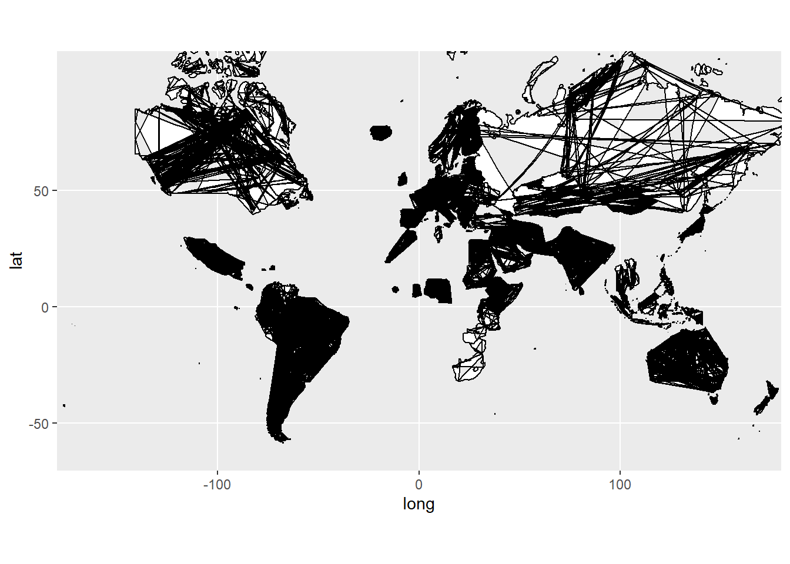
# Reorder the data
world_map <- world_map[order(world_map$group, world_map$order),]
# Redo the plot
ggplot(world_map, aes(x=long, y=lat, group=group)) +
geom_polygon(fill="white", color="black") +
coord_map("mercator", xlim = c(-180,180))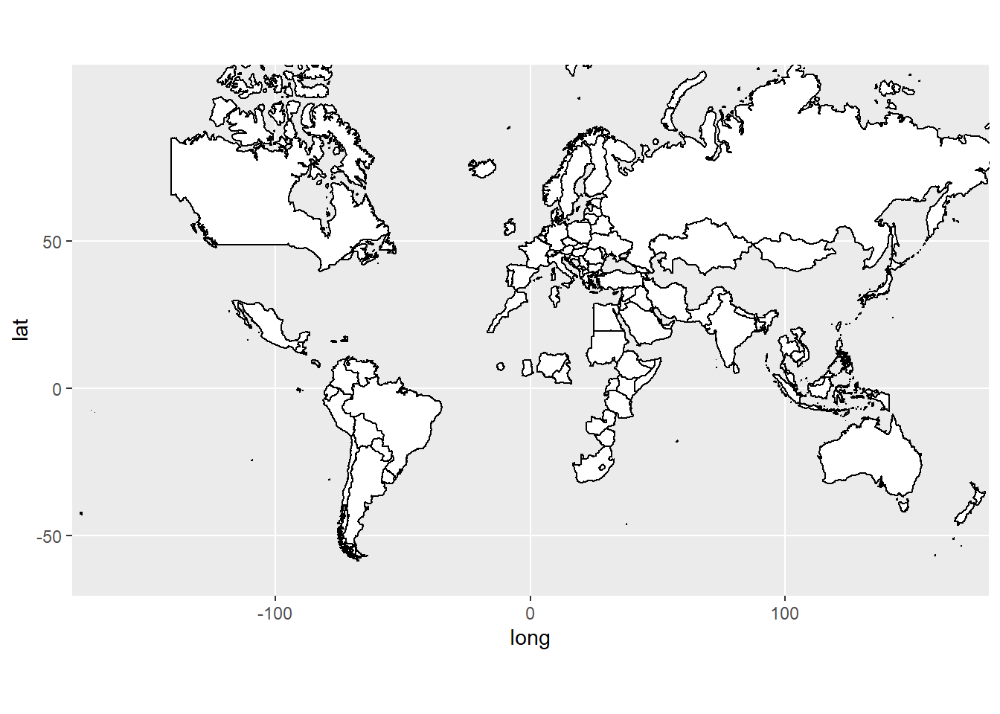
intlall$Citizenship[intlall$Citizenship=="China (People's Republic Of)"] <- "China" #Fix China Name.
#Remerge and order
world_map <- merge(map_data("world"), intlall,
by.x ="region",
by.y = "Citizenship")
world_map <- world_map[order(world_map$group, world_map$order),]
ggplot(world_map, aes(x=long, y=lat, group=group)) +
geom_polygon(aes(fill=Total), color="black") +
coord_map("mercator", xlim = c(-180,180))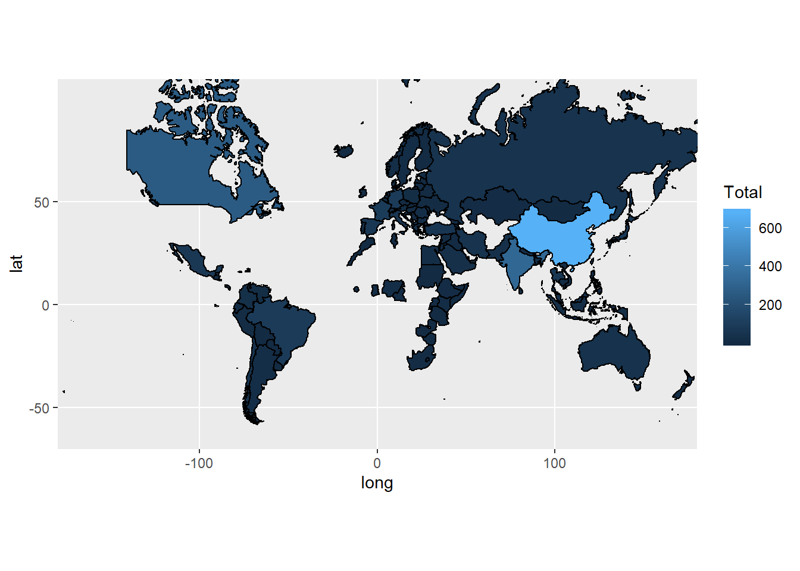
#Other Projections
ggplot(world_map, aes(x=long, y=lat, group=group)) +
geom_polygon(aes(fill=Total), color="black") +
coord_map("ortho", orientation=c(20, 30, 0))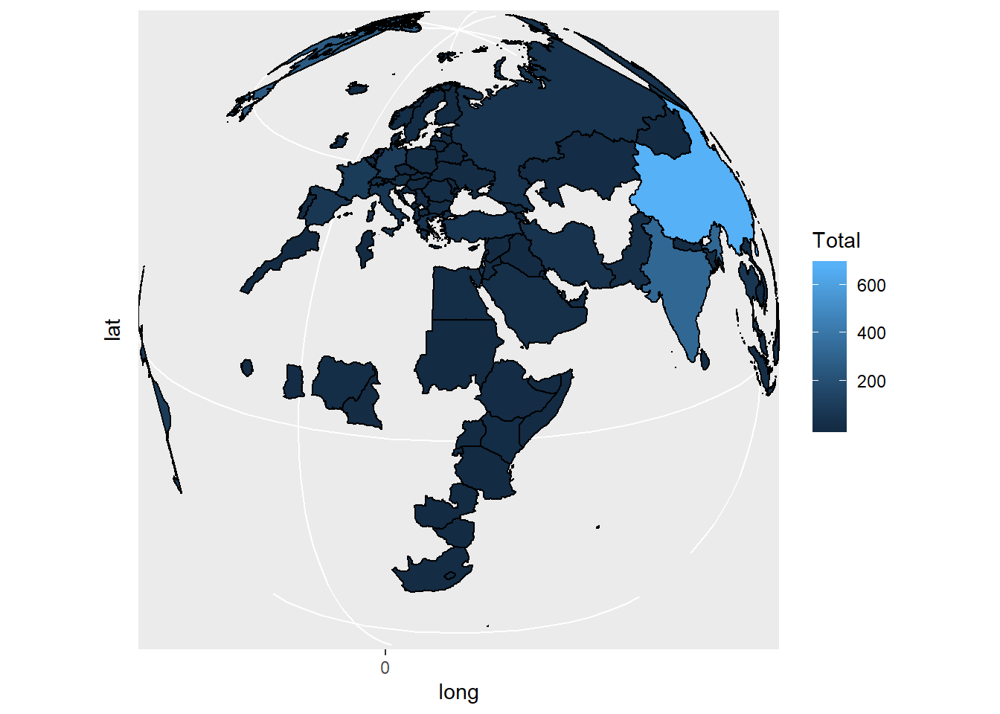
ggplot(world_map, aes(x=long, y=lat, group=group)) +
geom_polygon(aes(fill=Total), color="black") +
coord_map("ortho", orientation=c(-37, 175, 0))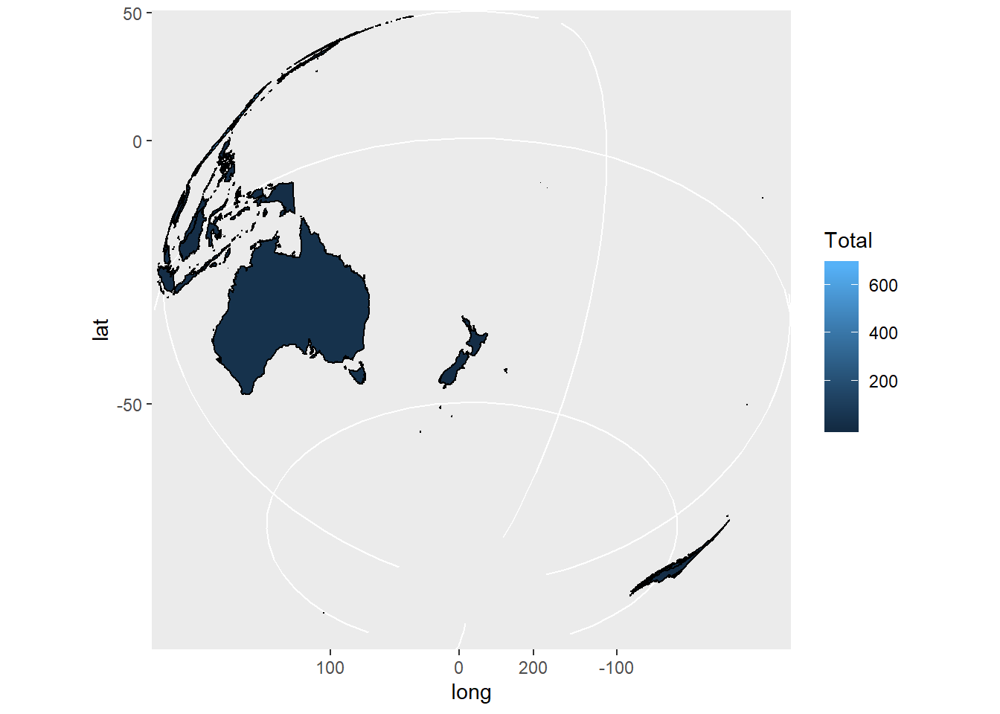 ### Line Charts
#Using Line Charts
households <- read.csv("week7/households.csv")
library(reshape2)
households[,1:2]#First 2 columns## Year MarriedWChild
## 1 1970 40.3
## 2 1980 30.9
## 3 1990 26.3
## 4 1995 25.5
## 5 2000 24.1
## 6 2005 22.9
## 7 2010 20.9
## 8 2012 19.6## Year variable value
## 1 1970 MarriedWChild 40.3
## 2 1980 MarriedWChild 30.9
## 3 1990 MarriedWChild 26.3
## 4 1995 MarriedWChild 25.5
## 5 2000 MarriedWChild 24.1
## 6 2005 MarriedWChild 22.9## [1] 40.3 30.9 26.3 25.5 24.1 22.9 20.9 19.6 30.3 29.9## Year variable value
## 1 1970 MarriedWChild 40.3
## 2 1980 MarriedWChild 30.9
## 3 1990 MarriedWChild 26.3
## 4 1995 MarriedWChild 25.5
## 5 2000 MarriedWChild 24.1
## 6 2005 MarriedWChild 22.9
## 7 2010 MarriedWChild 20.9
## 8 2012 MarriedWChild 19.6
## 9 1970 MarriedWOChild 30.3
...ggplot(melt(households, id="Year"),
aes(x=Year, y=value, color=variable)) +
geom_line(size=2) + geom_point(size=5) +
ylab("Percentage of Households")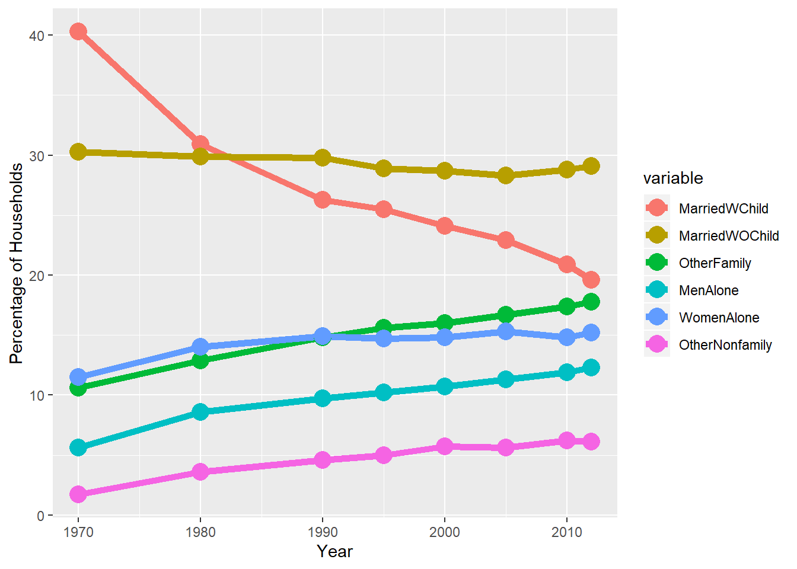
8.4 Assignment
8.4.1 Part 1 - Election Forecasting Revisited
8.4.1.1 Problem 1 - Drawing a Map of the US
library(caTools)
library(rpart)
library(rpart.plot)
library(ROCR)
library(caret)
library(maps)
library(ggmap)
library(tmaptools)
library(mapproj)
#1.1 How many different groups are there?
statesMap <- map_data("state")
str(statesMap)## 'data.frame': 15537 obs. of 6 variables:
## $ long : num -87.5 -87.5 -87.5 -87.5 -87.6 ...
## $ lat : num 30.4 30.4 30.4 30.3 30.3 ...
## $ group : num 1 1 1 1 1 1 1 1 1 1 ...
## $ order : int 1 2 3 4 5 6 7 8 9 10 ...
## $ region : chr "alabama" "alabama" "alabama" "alabama" ...
## $ subregion: chr NA NA NA NA ...##
## 1 2 3 4 5 6 7 8 9 10 11 12 13 14 15 16
## 202 149 312 516 79 91 94 10 872 381 233 329 257 256 113 397
## 17 18 19 20 21 22 23 24 25 26 27 28 29 30 31 32
## 650 399 566 36 220 30 460 370 373 382 315 238 208 70 125 205
## 33 34 35 36 37 38 39 40 41 42 43 44 45 46 47 48
## 78 16 290 21 168 37 733 12 105 238 284 236 172 66 304 166
## 49 50 51 52 53 54 55 56 57 58 59 60 61 62 63
## 289 1088 59 129 96 15 623 17 17 19 44 448 373 388 68#1.2
ggplot(statesMap, aes(x = long, y = lat, group = group)) +
geom_polygon(fill = "white", color = "black") 
8.4.1.2 Problem 2 - Coloring the States by Predictions
#2.1
polling <- read.csv("week7/PollingImputed.csv")
Train <- subset(polling, Year == 2004 | Year==2008)
Test <- subset(polling, Year == 2012)
mod2 <- glm(Republican~SurveyUSA+DiffCount, data=Train, family="binomial")
TestPrediction <- predict(mod2, newdata=Test, type="response")
TestPredictionBinary <- as.numeric(TestPrediction > 0.5)
predictionDataFrame <- data.frame(TestPrediction, TestPredictionBinary, Test$State)
summary(predictionDataFrame$TestPredictionBinary)## Min. 1st Qu. Median Mean 3rd Qu. Max.
## 0.0000 0.0000 0.0000 0.4889 1.0000 1.0000#2.2
predictionDataFrame$region <- tolower(predictionDataFrame$Test.State)
predictionMap <- merge(statesMap, predictionDataFrame, by = "region")
predictionMap <- predictionMap[order(predictionMap$order),]#order
#2.4
ggplot(predictionMap, aes(x = long, y = lat, group = group, fill = TestPredictionBinary)) +
geom_polygon(color = "black")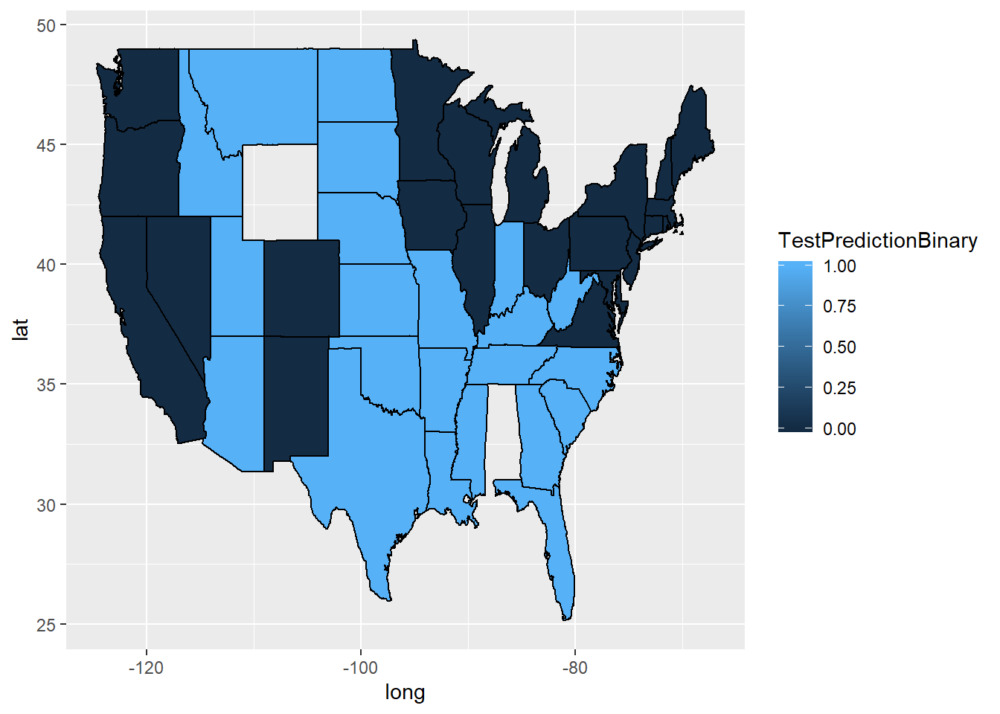
#2.5
ggplot(predictionMap, aes(x = long, y = lat, group = group, fill = TestPredictionBinary))+ geom_polygon(color = "black") +
scale_fill_gradient(low = "blue", high = "red", guide = "legend", breaks= c(0,1), labels = c("Democrat", "Republican"), name = "Prediction 2012")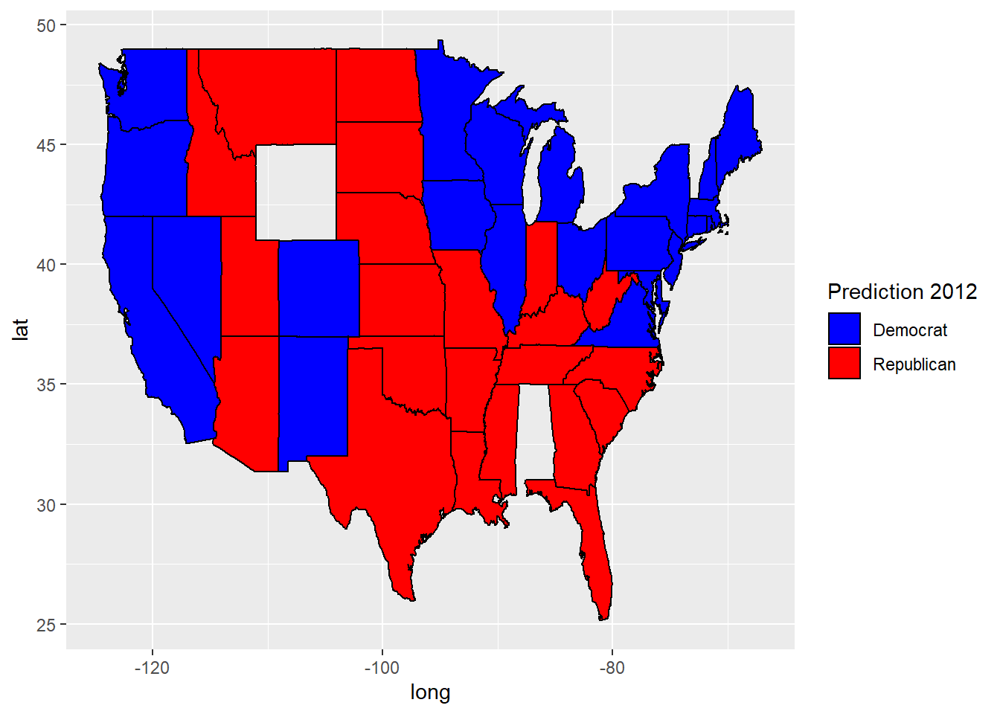
8.4.1.3 Problem 3 - Understanding the Predictions
#3.2 What was our predicted probability for the state of Florida?
tapply(predictionMap$TestPrediction,predictionMap$Test.State, mean)## Alabama Alaska Arizona Arkansas California
## NA NA 9.739028e-01 9.994949e-01 9.261522e-05
## Colorado Connecticut Delaware Florida Georgia
## 9.432967e-03 3.431627e-05 NA 9.640395e-01 9.901680e-01
## Hawaii Idaho Illinois Indiana Iowa
## NA 9.996372e-01 9.262188e-05 9.992970e-01 6.486672e-02
## Kansas Kentucky Louisiana Maine Maryland
## 9.506137e-01 9.901659e-01 9.994949e-01 9.382536e-04 2.431748e-06
## Massachusetts Michigan Minnesota Mississippi Missouri
## 1.236970e-07 1.770169e-05 4.843047e-04 9.325489e-01 9.990219e-01
...8.4.2 Part 2 - Visualizing Network Data
8.4.2.1 Problem 1 - Summarizing the Data
## 'data.frame': 146 obs. of 2 variables:
## $ V1: int 4019 4023 4023 4027 3988 3982 3994 3998 3993 3982 ...
## $ V2: int 4026 4031 4030 4032 4021 3986 3998 3999 3995 4021 ...## 'data.frame': 59 obs. of 4 variables:
## $ id : int 3981 3982 3983 3984 3985 3986 3987 3988 3989 3990 ...
## $ gender: Factor w/ 3 levels "","A","B": 2 3 3 3 3 3 2 3 3 2 ...
## $ school: Factor w/ 3 levels "","A","AB": 2 1 1 1 1 2 1 1 2 1 ...
## $ locale: Factor w/ 3 levels "","A","B": 3 3 3 3 3 3 2 3 3 2 ...#1.2 - Out of all the students who listed a school, what was the most common locale?
table(users$locale)##
## A B
## 3 6 50##
## A B
## 2 15 428.4.2.2 Problem 2 - Creating a network
library(igraph)
g <- graph.data.frame(edges,FALSE,users)
#2.2
plot(g, vertex.size=5, vertex.label=NA)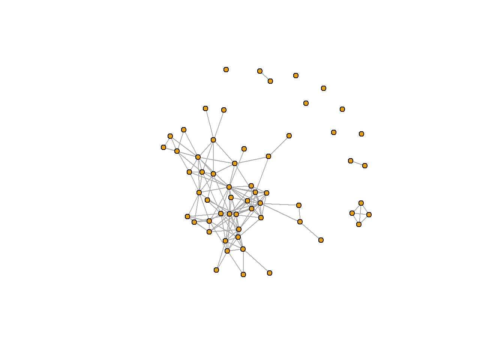
#2.3 How many users are friends with 10 or more other Facebook users in this network?
table(degree(g) >=10)##
## FALSE TRUE
## 50 9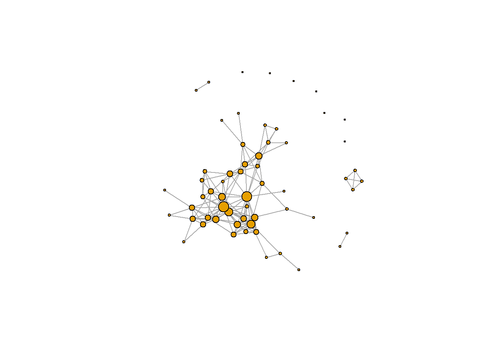
## Min. 1st Qu. Median Mean 3rd Qu. Max.
## 2.000 2.500 3.500 4.475 6.000 11.0008.4.2.3 Problem 3 - Coloring Vertices
V(g)$color <- "black"
#Color by gender
V(g)$color[V(g)$gender == "A"] <- "red"
V(g)$color[V(g)$gender == "B"] <- "gray"
plot(g, vertex.label=NA)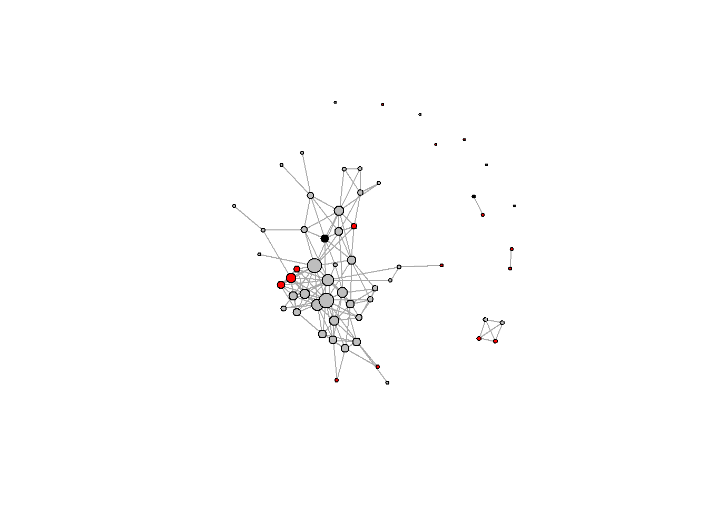
#Color by school
V(g)$color <- "black"
V(g)$color[V(g)$school == "A"] <- "red"
V(g)$color[V(g)$school == "AB"] <- "blue"
plot(g, vertex.label=NA)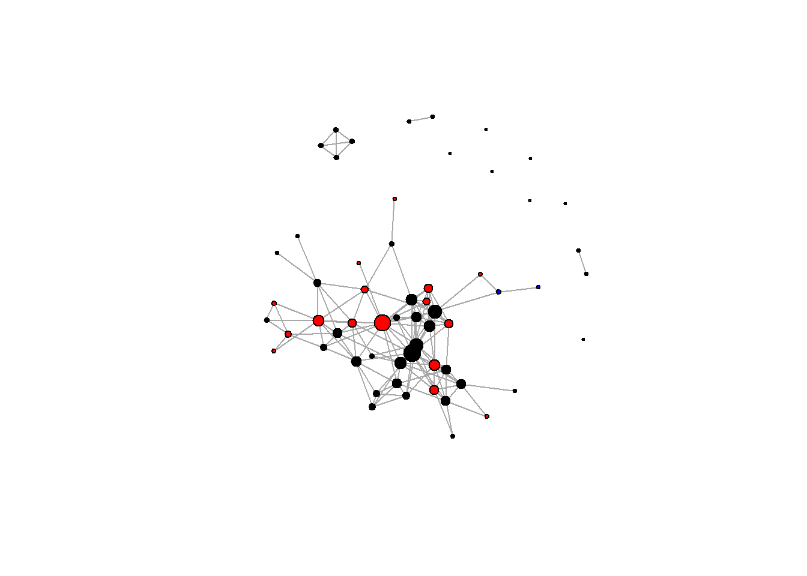
#Color by locale
V(g)$color <- "black"
V(g)$color[V(g)$locale == "A"] <- "red"
V(g)$color[V(g)$locale == "B"] <- "blue"
plot(g, vertex.label=NA)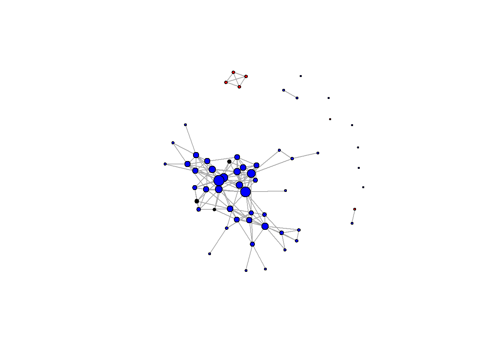